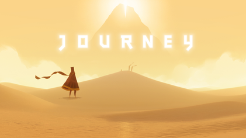

Adventure · 2012
Journey
Wordless multiplayer where strangers became companions for an hour.

Cover: Wikipedia: Journey (2012 video game)
Facts
- Released
- 2012-03-13
- Genre
- Adventure
- Category
- Adventure
- Platforms
- Mobile, PC, PlayStation
- Developers
- Thatgamecompany
- Publishers
- Annapurna Interactive, Sony Interactive Entertainment